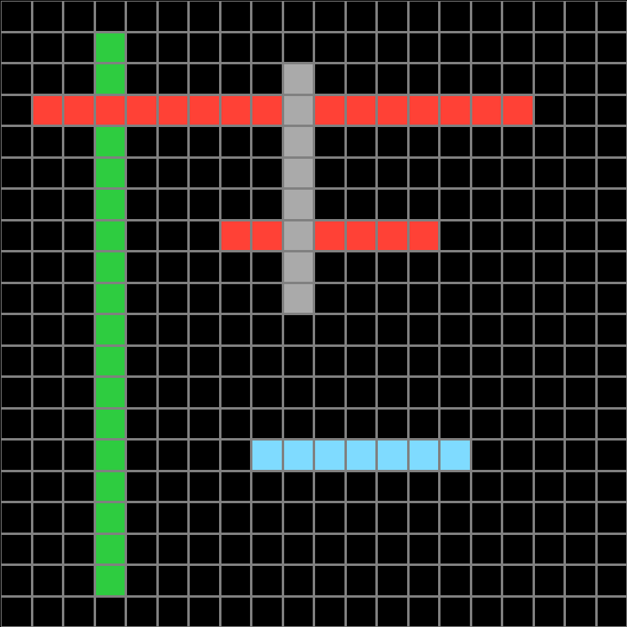
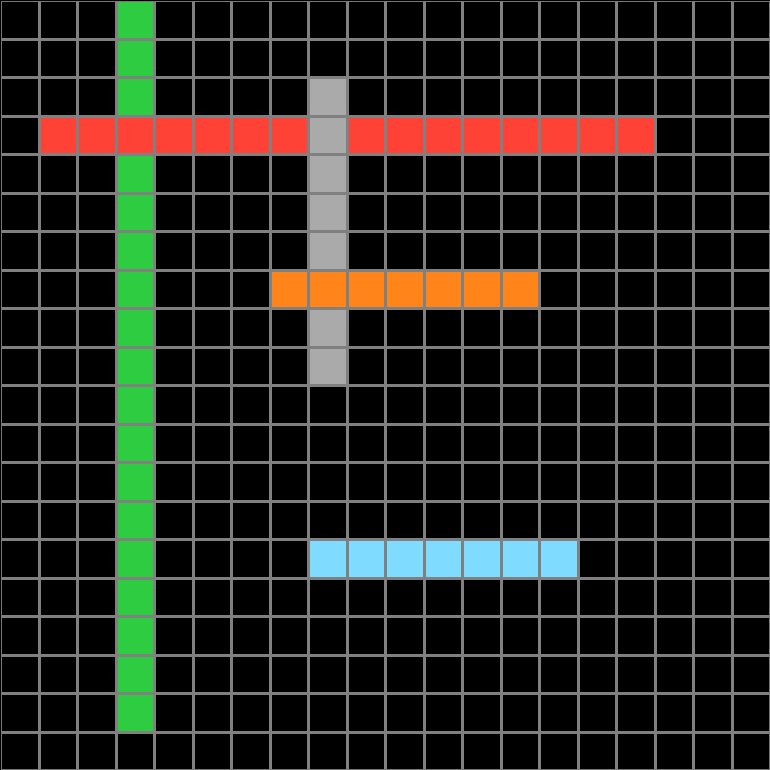
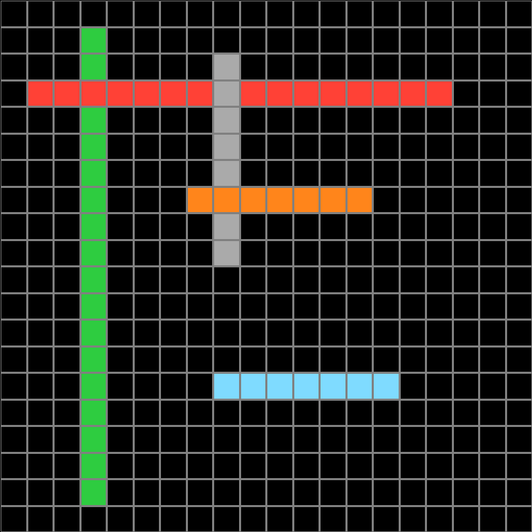
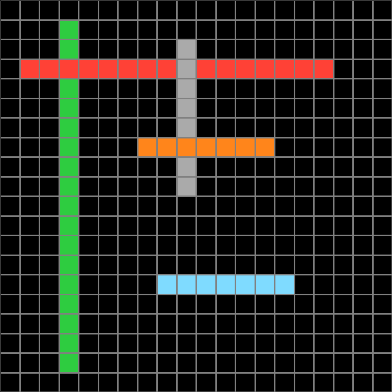
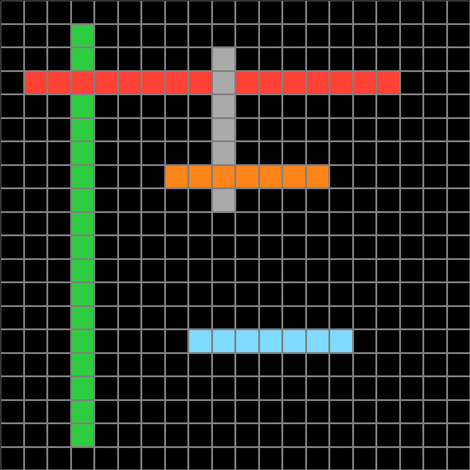
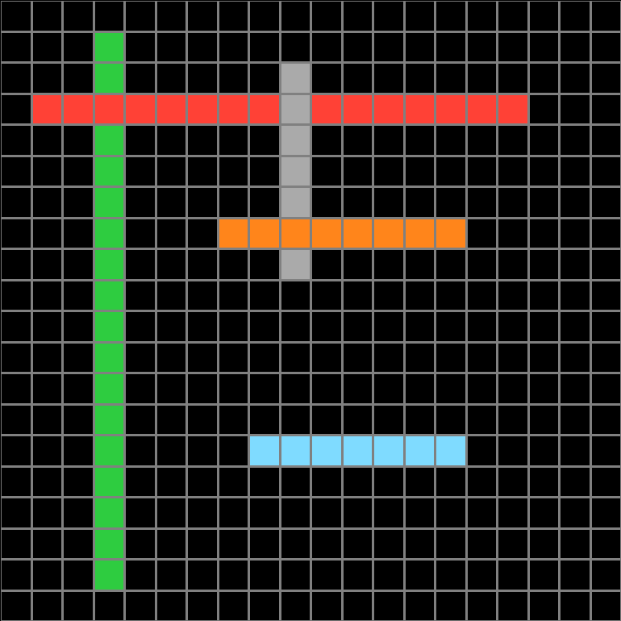
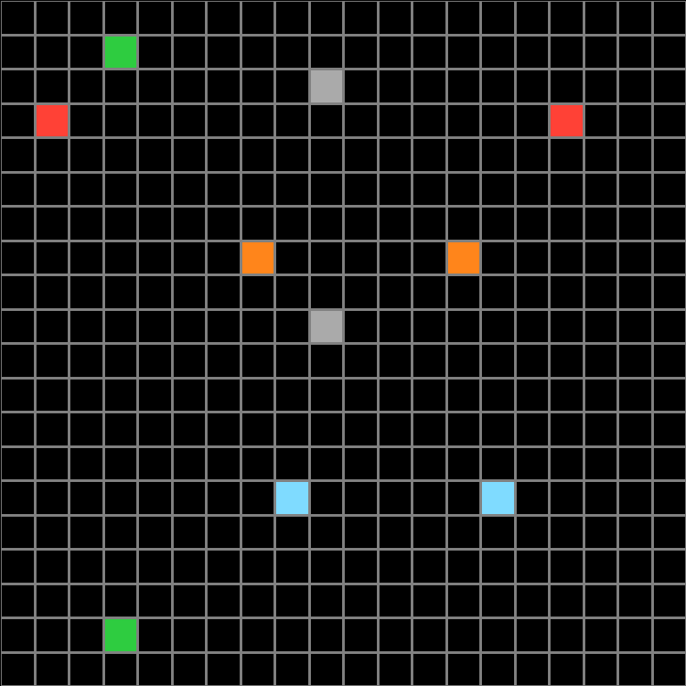
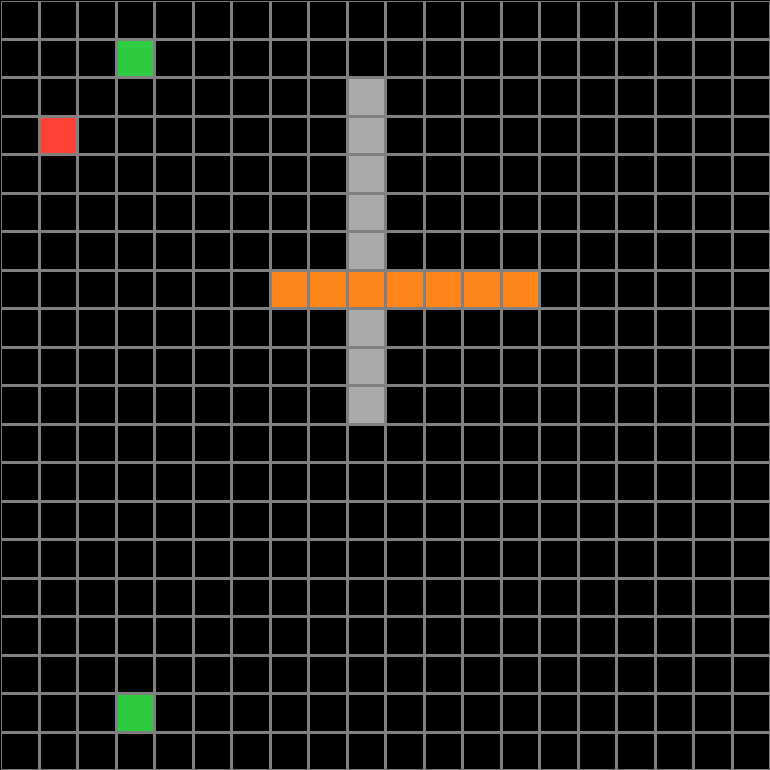
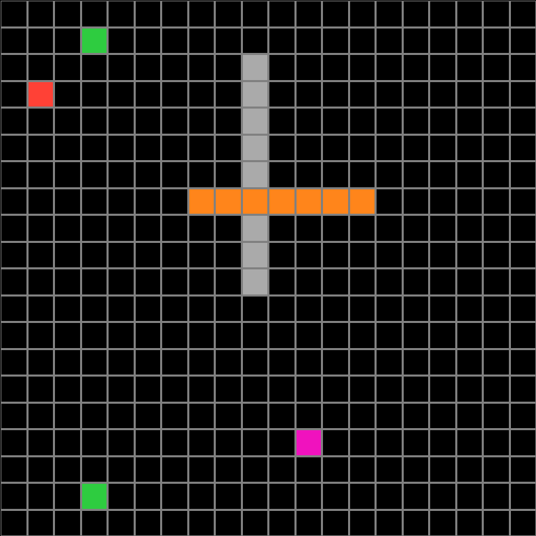
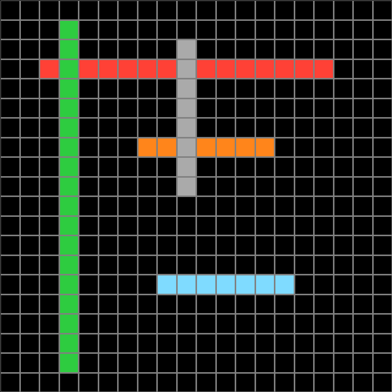

Participant 1
Initial description: Output is the same colored dots being connected by squares with their same color. Lines going vertical are on top of horizontal lines, thus their color shows when the lines intersect.
Final description: Output is the same colored dots being connected by squares with their same color. Lines going vertical are on top of horizontal lines, thus their color shows when the lines intersect.

Participant 2
Initial description: connect one point with same color to the other
Final description: i connected each color either vertically or horizontally ensuring that the vertical color was on top


Participant 3
Initial description: Connect horizontal lines in same color, then connect with vertical lines in correct color
Final description: Connect horizontal lines in same color, then connect with vertical lines in correct color

Participant 4
Initial description: Create a picture of multicolored lines, connecting the squares of the same color. First the horizontal lines, then - over them - the vertical ones.
Final description: Create a picture of multicolored lines, connecting the squares of the same color. First the horizontal lines, then - over them - the vertical ones.

Participant 5
Initial description: Match the blocks to the example and copy the colors to fit the exact way the examples were.
Final description: Making sure the lines going down are in front copy from the green to green, red to red, orange to orange, gray to gray, and blue to blue. Filling the colors the same as the top and bottom.


Participant 6
Initial description: I thought the rule was to make lines connecting the same colored squares together.
Final description: I thought it was to connect the colored dots that were the same color together and to make the color that was going down be the color went through them.


Participant 7
Initial description: Connect dots into lines.
Final description: I have no idea what I was supposed to do here. Apparently I do not understand.



Participant 8
Initial description: crosses are made using squares from close by ones
Final description: crosses are made using close proximity squares



Participant 9
Initial description: The rule looked to be the output created lines between the two points of the same color, a second rule was that the lines that were up and down were always over lines moving side to side.
Final description: The rule looked to be the output created lines between the two points of the same color, a second rule was that the lines that were up and down were always over lines moving side to side.

Participant 10
Initial description: I accidentally clicked the submit buttom, but it appears you connect the dots
Final description: The ones that go vertically must overlap the horizontal bars, and fill in between the spaces


Participant 11
Initial description: Colors should be continuous between the squares connecting the first and last. Vertical lines should have precedence over horizontal lines - look like they are on top of horizontal lines
Final description: Colors should be continuous between the squares connecting the first and last. Vertical lines should have precedence over horizontal lines - look like they are on top of horizontal lines

Participant 12
Initial description: I thought the rule was to connect the same colors to each other in a line, and in cases of intersection, the vertical lines would always be on top of the horizontal lines.
Final description: Connect the same colors to each other in a line of that color. When lines intersect, the vertical lines (the ones going up to down) should be on top.
